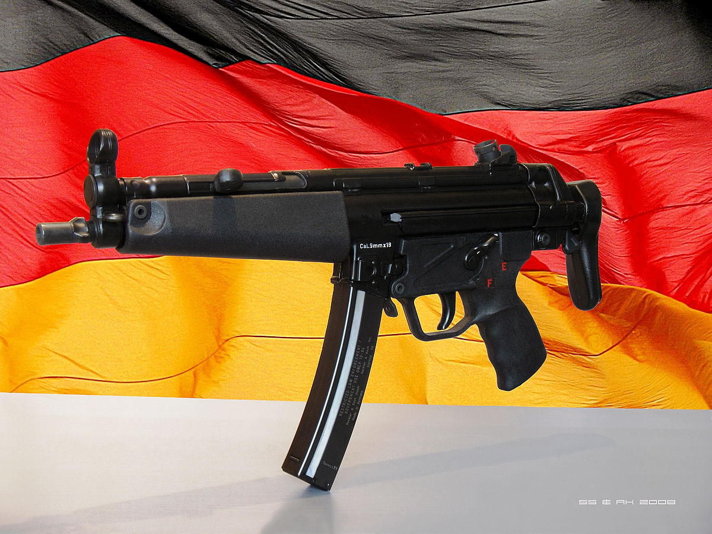

AK-47
Давайте начнём с легенды легенд - автомата Калашникова!

Данный автомат был создан Михаилом Тимофеевичем Калашниковым в 1947 году, но был принят на вооружение только в 1949. Есть боевое и гражданское семейство автомата Калашникова. Некоторые из них: AKM и AK-74 с их модификациями, ручной пулемёт Калашникова(обычный Калашников, только с двуногой на конце дула и удобнее оригинала), карабины и гладкоствольные ружья "Сайга", и т.д.
Итак, история автомата Калашникова(в дальнейшем AK-47).
Отправной точкой работ по созданию автомата для советских вооружённых сил стало прошедшее 15 июля 1943 года совещание Технического совета при Наркомате обороны СССР, на котором по итогам изучения трофейного немецкого автомата MKb.42(H) под первый в мире массовый промежуточный патрон 7,92 mm калибра 7,92×33 мм, была отмечена большая важность нового направления в оружейной мысли и поставлен вопрос о необходимости срочной разработки своего «уменьшенного» патрона, аналогичного немецкому, а также оружия под него.
Первые образцы нового патрона были созданы ОКБ-44 уже через один месяц после совещания, а его опытно-промышленное производство началось в марте 1944 года. В ноябре 1943 года чертежи и спецификации на новый 7,62-мм промежуточный патрон конструкции Н. М. Елизарова и Б. В. Сёмина были разосланы по всем организациям, участвовавшим в разработке нового комплекса оружия. На этом этапе он имел калибр 7,62×41 мм, но впоследствии был переработан, т.е. калибр был изменён на 7,62×39 мм.
В Battlefield и CS:GO AK-47 ничем не отличается от оригинала, но в PUBG-е AK-47 заменён на АКМ (Avtomat Kalashnikova Modernizirovanny, т.е. модернизированный автомат Калашникова) и вот как он выглядит:

А в Cs 1.6 AK-47 называется CV-47. Также AK... ой извиняюсь CV-47 был изменён в целях не допустить бана на Cs 1.6 из-за авторского права, т.к. компания "Valve" ещё не была такой богатой, чтобы справиться с этим.
В чём заключаются изменения?? А в том, что передёргивалка под названием затвор находится слева, а не справа, как показано в оригинале.

Для справки: оригинальная версия AK-47 показана справа. Там чётко и ясно видно, что затвор находится справа, раз оригинал был показан справа.
M4A4
.jpg "Нажми на меня!") Кликни
сюда
Кликни
сюда
M4 — автоматический карабин, созданный в США на основе винтовки М16А2
и изначально предназначенный для вооружения экипажей боевых машин и расчётов вооружения и военной техники. Несмотря на это, Командование специальных операций США приняло этот карабин в качестве единого для всех американских сил специальных операций. В настоящее время его использует армия США, так как большее удобство укороченного карабина в современных условиях, когда большую часть армии составляют мотопехота, экипажи боевых машин и вспомогательные войска, более чем компенсирует достаточно незначительное снижение его характеристик в сравнении с винтовкой.
В каждом магазине данной винтовки находятся 30 патронов калибра 5.56 и 90 патронов в запасе.
- Эффективная дальность стрельбы составляет:
- по одиночным целям — 500 м;
- по групповым целям — 600 м;
К сожалению в Кс 1.6 нету M4A4, поэтому ловите M4A1-S в Кс 1.6:
Кликни сюда Кликни
сюда
Кликни
сюда
Karambit

Керамбит представляет собой небольшой индонезийской изогнутый нож , напоминающим коготь.
Считается, что Керамбит был орудированным(?) среди минангкабау(народ такой есть) в Западной Суматре(провинция Индонезии), где, согласно фольклору, он был вдохновлен когтями тигра . Как и большинство видов оружия в регионе, первоначально это было сельскохозяйственное орудие, предназначенное для того, чтобы собирать корни, собирать молотилку и сажать рис в большей части островной Юго-Восточной Азии. Это меньший вариант серпов Юго-Восточной Азии.

Desert Eagle
Хочу начать список пистолетов с довольно известного Desert Eagle.
Desert Eagle (с англ. — «Пустынный орёл») — самозарядный пистолет крупного калибра (до 12,7 мм). Позиционируется как охотничье оружие, спортивное оружие и оружие для самозащиты от диких зверей и преступных посягательств.
Был разработан в 1983 году в США компанией Magnum Research с последующей доработкой израильской компанией Israel Military Industries, впоследствии занимавшейся производством данных пистолетов. Благодаря своим габаритам и устрашающему виду часто используется в фильмах, в телевизионных постановках и в компьютерных играх.
История
Оригинальная заявка на патент пистолета, работающего по принципу отвода газов, была подана сотрудником американской компании Magnum Research Бернардом С. Уайтом (Bernard C. White) в январе 1983 года. Этот патент послужил фундаментом для разработки Desert Eagle, первый работающий экземпляр которого был создан компанией Magnum Research (США) в 1983 году. Затем пистолет прошёл финальную доработку в компании Israel Military Industries в Израиле, и в декабре 1985 года был получен второй патент, который окончательно определил вид и характеристики пистолета, пущенного в массовое производство.
Первая партия в 1000 пистолетов калибра .357 Magnum является на сегодняшний день коллекционным раритетом, потому что их стволы нарезаны традиционной нарезкой, и эти пистолеты нельзя переделать под другие калибры.
Массовое производство пистолета было начато на заводах Israel Military Industries в Израиле. В 1995—2000 годах было переведено на фабрику Saco Defense в штате Мэн в США, а затем снова вернулось на заводы Israel Military Industries в связи с покупкой фабрики Saco фирмой General Dynamics.
Общее описание
С технической точки зрения, Desert Eagle построен по схеме, характерной не для самозарядных пистолетов, а для автоматических винтовок: в автоматике используется принцип отвода пороховых газов для перезарядки. Газоотводная трубка расположена под стволом, пороховые газы выводятся непосредственно к затворной раме. Запирание осуществляется поворотом личинки затвора. Вообще затвор и запирание боевыми упорами (личинками) напоминает механизм автоматической винтовки M16.
За счёт необходимости в газоотводной трубке ствол Desert Eagle выглядит более массивным, чем стволы других пистолетов. Также, из-за необходимости в пространстве для движения затворной рамы, пистолет получился весьма длинным. Кроме большой длины, недостатком газоотводного механизма является требование использования патронов с пулями в медной оболочке (оболочечных, полуоболочечных или экспансивных). Такие пули делают пистолет немного более мощным, и дают возможность пробивать некрепкие стены и бронежилеты.
Использование газоотводного механизма позволило применять намного более мощные патроны, чем те, которые обычно применяются в самозарядных пистолетах. Использование мощных патронов .50 Action Express (12,7×32,6 мм) делает Desert Eagle конкурентоспособным в областях, ранее безраздельно занятых револьверами.
Используемые боеприпасы
На данный момент, пистолеты Desert Eagle могут быть переоборудованы под три калибра. Переоборудование выполняется путём замены затвора, магазина и ствола, и может быть выполнено в полевых условиях.
Выпуск и продажа аксессуаров для боеприпасов калибра .440 Cor-bon и .41 Magnum прекращён.
Фирма Magnum Research — разработчик пистолетов Desert Eagle — предупреждает, что предпочтительнее использовать боеприпасы, частично покрытые медной оболочкой — в отличие от боеприпасов, в которых свинцовый сердечник пули открыт с боков. Из-за большой дульной энергии пистолета мягкий свинец, трущийся о стенки ствола, прикипает к ним, загрязняя газоотводную трубку. Счистить этот свинец потом довольно трудно. Кроме того, горячий свинец покроет поршень механизма перезарядки и возвратную пружину, что может привести к осечкам и к неработоспособности пистолета. Кроме того, Magnum Research не рекомендует использовать боеприпасы, снаряжённые повторно из стреляных гильз.
Достоинства
- Большая дальность.
- Высокая точность.
- Высокое останавливающее действие пули.
Недостатки
- Большие габариты и масса.
- Высокая отдача и стоимость.
- Невысокая надёжность.
Штык - нож M9


M9 Bayonet является соединением штыка и ножа официально принят США в 1986 году. Данный нож имеет 7-ми дюймовое лезвие и оснащён оболочкой, выполняющую роль кусачек(фотография).
Штык M9 был спроектирован и разработан Чарльзом А. "Микки" Финном в его исследовательской компании Qual-A-Tec. Это была усовершенствованная копия российского штыка АКМ I типа. Позже он произвел его под именем Phrobis III , заполнив военный контракт на 325 000 единиц данного оружия. Компания Buck Knives заключила контракт на изготовление 300 000 единиц и продала коммерческую версию под собственным именем. Проекты Финна оказались чрезвычайно популярными, и были широко подделаны и незаконно проданы другими производителями.
В 1986-ом,Финн получил Патент Соединённых Штатов.
днако они продолжали беспрепятственно поступать в Соединенные Штаты из Азии и Мексики, сокращаясь до законных продаж.
ОНекоторые производственные циклы M9 имеют дол(?), а некоторые - нет, в зависимости от того, какой подрядчик изготовил эту партию, и какими были военные характеристики в то время. Штык М9 частично заменил старый штык М7, представленный в 1964 году. Хотя было заявлено, что М9 более подвержен поломкам, чем более старый М7, M9 оставался лучшим.
Вариации
Нож М11, или M11 EOD является версией M9, специально предназначенной для обезвреживания взрывоопасных предметов. Он имеет некоторые дополнительные функции(удар молотка), но использует то же лезвие и ножны, что и M9.
MP5 - SD
Heckler & Koch MP5 (Maschinenpistole 5 — пистолет-пулемёт, модель № 5) — семейство пистолетов-пулемётов, разработанных немецким производителем стрелкового оружия, фирмой Heckler & Koch (HK) в 1960-х годах на основе HK G3.
Пистолет-пулемёт MP5 был впервые представлен фирмой Heckler & Koch в 1966 году, под названием HK54. Это название было выбрано согласно старой системе нумерации моделей фирмы: число «5» определяло оружие как пистолет-пулемёт, а число «4» определяло что пистолет-пулемёт создан под патрон 9×19 мм Парабеллум. Современное название он получил после того, как в середине 1966 года, правительство ФРГ приняло его на вооружение полиции и пограничной службы как Maschinenpistole 5, или сокращённо MP5. Благодаря использованию пистолета-пулемёта немецким контртеррористическим отрядом GSG 9, который являлся частью пограничной службы, аналогичные специальные подразделения других западных стран получили возможность ознакомиться с его характеристиками.
Для расширения области возможных применений пистолетов-пулемётов были созданы различные ответвления: малокалиберное личное оружие самообороны, например HK MP7 и компактные карабины такие как M4, G36C — укороченный вариант автомата HK G36, и XM8, также основанный на G36. Фирма Heckler & Koch начала замещение линейки MP5 более дешёвой моделью HK UMP, которая доступна в вариантах под патроны Однако поскольку UMP использует более простую автоматику со свободным затвором, он не может быть достойным конкурентом MP5 для требовательных стрелков.
Автоматика MP5 действует по принципу полусвободного затвора, стрельба ведётся с закрытого затвора. Ударно-спусковой механизм куркового типа обеспечивает стрельбу в автоматическом и одиночном режиме. Предохранитель одновременно является переводчиком режима огня. Его рычаг расположен возле рукоятки управления огнём с левой стороны. При постановке на предохранитель блокируется спусковой крючок и курок, что обеспечивает безопасность в обращении с оружием.
Запирание затвора в переднем положении осуществляется роликами, одновременно играющими роль ускорителя затвора. Такая конструкция позволила снизить отдачу и повысить кучность стрельбы. Прицел барабанного типа, диоптрический или открытый.
Достоинства и недостатки
Достоинства
- Длина ствола в 225 мм гарантирует максимальный переход энергии пороха на разгон пули (дульная энергия, около 650 Дж), при этом значительно ослабляя дульное пламя.
- Рукоятка имеет удачные наклон и форму, позволяя надёжно удерживать оружие. Размещение флажка предохранителя и режима огня вблизи неё, позволяет удобно его переключать, не ослабляя хватку рукояти.
- Малые габариты, компактность.
- Возможность использования прицелов различных типов, глушителя и тактического фонаря расширяет возможности оружия.
- Фосфатированное покрытие деталей делает оружие устойчивым к неблагоприятным внешним условиям.
- ПП легко разбирается для чистки и смазки.
- Добротная, прочная конструкция.
Недостатки
- Себестоимость производства MP5 выше, чем пистолета-пулемёта со свободным затвором.
- Очень резкая и плохо контролируемая отдача оружия в целом.
- МP5 сильно «подпрыгивает» вверх при стрельбе даже короткими очередями.
- Невысокая надежность, обусловленная сильной чувствительностью к загрязнению.
- Необходим тщательный выбор патронов, оружие не рекомендуется заряжать патронами с экспансивной/полуоболочечной пулей вообще из-за проблем с подачей патронов из магазина в ствол(утыкание).
- Лучшими боеприпасами для МP5 являются эти патроны, использование патронов с легкой пулей массой в 115 гран (7,45 грамма) приводит к сильному падению кучности огня даже на небольшом-свыше 25 метров-расстоянии. Патрон с более тяжелой-более 9 граммов, пулей, или патрон или zсоздаёт очень сильную отдачу из-за особенностей затвора и возвратно-боевой пружины, которую в этом случае надо менять на более жесткую, что ещё сильнее ухудшает точность и кучность стрельбы.
- Сравнительно долгая процедура перезарядки — для этого нужно оттянуть затвор и поместить рукоятку в паз затворной задержки, затем сменить магазин, после чего снять затвор с задержки нажатием на рукоятку. Смена частично пустого магазина на полный требует приложения достаточно большого физического усилия. Данные недостатки свойственны всему оружию на базе винтовки G3.
Нож - Бабочка(Балисонг)